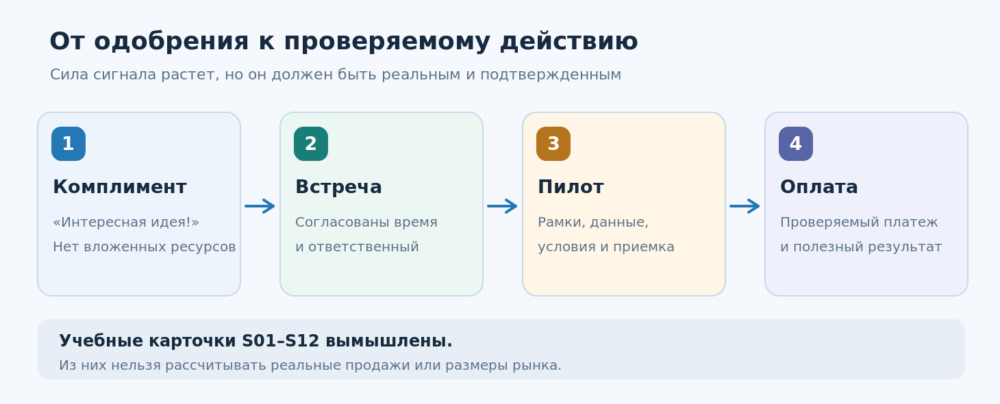
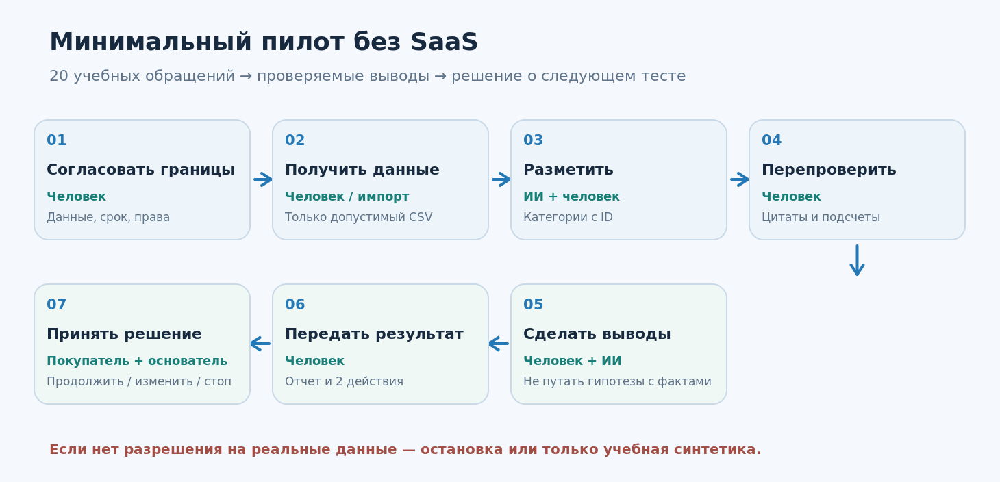
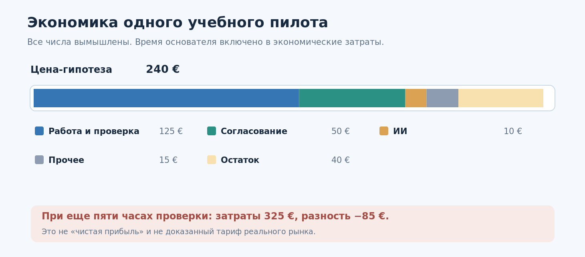

Урок 03. Как проверить бизнес-идею до разработки продукта¶
- Урок
- 03 из 12 ·
ANS.L03 - Редакция
r0001— техническая редакция для проверки · commit6d5747a7e564- Статус
- на редакционной проверкеоткрыт для замечанийпедагогический пилот не проведён
- Технологическая часть
- дата сведений — по паспорту урока ниже; в реестре 11 утвержд., сверка с источниками в S0 не выполнялась (UNVERIFIED)
Курс: AI-Native Startup — компания из 1–2 человек и команды ИИ-инструментов
Неделя: 2 · Занятие: 3 из 12 · Версия: 1.0 · Дата: 14.10.2026
Время: 100 минут; самостоятельная работа 30–45 минут активных действий
Вход: файлы 04_customer_profile.md, 05_interview_guide.md, 06_evidence_register.csv, 07_problem_decision.md из урока 02. Если интервью ещё не состоялись, их нельзя подменять учебными симуляциями.
Инструменты: текстовый редактор, электронная таблица, необязательный ИИ-ассистент. Программирование не требуется.
Главный вопрос урока: как до разработки SaaS-системы обнаружить не только интерес к идее, но и конкретное действие потенциального покупателя, показывающее готовность потратить время, ресурсы или деньги на решение проблемы?
Чему вы научитесь¶
К концу занятия вы сможете отделять словесное одобрение от коммерческих действий; описывать узкое проверяемое предложение (offer); проектировать ручной пилот с ИИ (concierge MVP); назначать цену как гипотезу; записывать сигналы спроса с указанием источника; оценивать стоимость выполнения пилота; ставить решение CONTINUE / CHANGE / STOP / NOT_ENOUGH_EVIDENCE по заранее записанным правилам. Ваш итог — план ограниченного пилота, а не готовая продающая программа и не доказательство Product–Market Fit.

1. Сцена: «Идея понравилась все컶
Ирина и Максим изучают, как B2B-поставщики оборудования обрабатывают правки заказов и вопросы об отгрузке. После предыдущего урока у них есть предположительный портрет клиента, JTBD-сценарий и заметки по интервью. Они уже способны показать, как ИИ собирает из обращения краткий отчёт.
Один собеседник сказал: «Супер!». Другой предложил добавить чат-бота. Третий попросил прислать ссылку. Максим хочет потратить две недели на код. Ирина предлагает сначала продать маленький результат: за пять рабочих дней изучить 20 разрешённых обращений, выделить повторяющиеся трудности, показать подтверждающие фрагменты и обсудить три практических изменения.
Покупатель отвечает: «Пришлите условия пилота. Могу согласовать до 300 евро, если пойму, какие данные нужны и как проверять качество». Это уже содержательнее, чем похвала, но денег пока никто не заплатил. Перед нами вымышленная сцена на основе учебной карточки S01. Она не служит доказательством реального спроса.
Вопрос-прогноз: что полезнее проверить завтра — возможность агента сделать ещё десять функций или готовность конкретного потенциального клиента выделить ресурс на ограниченный пилот? Какие действия покупателя вы сочтёте свидетельством интереса, а какие — обычной вежливостью?
Важная граница¶
Не всякий стартап обязан получать оплату до первого прототипа. Для сложных продуктов, регулируемых отраслей, аппаратного обеспечения и длинных закупок первым проверяемым действием может быть встреча с владельцем бюджета, разрешённый доступ к тестовым данным или участие эксперта в пилоте. Однако такие сигналы слабее фактически оплаченной и принятой услуги. Мы должны называть их своими именами.
2. Четыре ступени: от интереса к результату¶
На уроке 01 мы различали деятельность (activity), произведённый артефакт (output) и изменение для клиента (outcome). На уроке 02 научились искать истории прошлых реальных событий и отделять свидетельства от интерпретаций. Теперь появляется ещё один вопрос: кому настолько важно улучшение, что он готов участвовать в проверке и, возможно, купить его?
Представьте лестницу доказательств:
| Сигнал | Что произошло | Что можно и нельзя заключить |
|---|---|---|
| Комплимент | «Очень интересная идея!» | Известна реакция, но не спрос |
| Действие | Согласован конкретный созвон с владельцем бюджета | Есть затрата времени; покупка не подтверждена |
| Доступ или согласованный пилот | Компания предоставляет допустимые тестовые данные, назначает ответственного, договаривается о результате | Появляется серьёзный шаг; оплата ещё неизвестна |
| Подтверждённый платёж / договор и приёмка услуги | Существуют проверяемые финансовые и договорные документы, услуга принята | Намного сильнее подтверждена возможность коммерческой сделки; масштаб рынка всё ещё неизвестен |
Сильный сигнал не отменяет проверку пригодности клиента: единичная оплаченная услуга может оказаться заказной консультацией, которая никогда не станет повторяемым продуктом. А в корпоративном B2B подписанный LOI (letter of intent, письмо о намерениях) может быть полезным промежуточным шагом; его обязательность и юридические последствия зависят от текста и права. LOI сам по себе не является оплаченной продажей.
Как не обмануть себя¶
Для каждого контакта записывайте: что человек сказал, какой шаг действительно сделал, когда, кто принимает решение, сколько стоит проверка для клиента, чего мы пока не знаем. Если участие ограничилось обещанием «потом посмотрим», это не оплаченный заказ. Если сформирован счёт, но он не оплачен, это выставленный счёт, а не выручка. Если предложена цена, но собеседник молчит, это неопределённый результат, а не обязательно отказ.
3. Вместо программы — проверяемый оффер¶
Оффер — это понятное предложение конкретному покупателю: для кого, в какой ситуации, что он получит, в какие сроки, при каких условиях и за какую цену или ресурс. Это не список кнопок и не инструкция агенту.
Сравните два описания.
Слабое: «Наш инновационный ИИ анализирует заявки, интегрируется с CRM, строит граф знаний, генерирует таски и автоматически улучшает продажи».
Сильнее: «Для небольшого поставщика оборудования мы за пять рабочих дней разберём 20 согласованно переданных, предварительно обезличенных обращений, покажем 3–5 повторяющихся проблем с точными ссылками на примеры и предложим два недорогих действия для проверки. Сначала владелец получает короткий образец отчёта; затем стороны решают, есть ли смысл в платном пилоте. Мы не обещаем увеличить продажи без последующего измерения».
У второго варианта есть проверяемый результат. Но мы ещё должны убедиться, что покупатель считает его ценным. Может оказаться, что ему нужен не аналитический отчёт, а исправление процесса выставления счетов; тогда оффер придётся изменить. Это нормальный результат исследования.
Семь полей минимального оффера¶
- Кому: узкий ICP и роль покупателя, например собственник небольшого B2B-поставщика.
- В какой ситуации: конкретная неприятность, подтверждаемая настоящими клиентскими историями.
- Что будет сделано: ограниченный объём работ, например 20 обращений из разрешённой выборки.
- Что клиент получит: отчёт на одной странице, таблицу подтверждений, план двух проверок.
- Как принимается работа: воспроизводимые критерии и сроки обратной связи.
- Цена или условия теста: гипотеза цены, бесплатный пример либо согласованный платный пилот; никто не обязан платить ради учёбы.
- Что исключено: постоянное наблюдение за CRM, автономное изменение данных, юридическая оценка, обещание роста выручки.
Прайс нельзя выводить только из себестоимости. Цена зависит от ценности для конкретного клиента, альтернатив и закупочного процесса. Себестоимость нужна, чтобы не продавать заведомо убыточную услугу, но она не доказывает готовность покупать.
4. Три пути к MVP без большой разработки¶
MVP (Minimum Viable Product) здесь — минимальный способ предоставить полезное решение и получить наблюдение о его использовании. Это не обязательно код и не обязательно самостоятельная SaaS-платформа.
| Формат | Что происходит | Что проверяем | Риск |
|---|---|---|---|
| Разбор вручную (concierge) | Основатель сам выполняет большую часть работы, ИИ помогает | Нужен ли клиенту результат вообще | Не повторяется без человека |
| «За кулисами» с автоматизацией | Покупатель видит простой интерфейс, часть работы выполняют человек и инструменты | Как удобно получать результат | Нельзя ложно представлять услугу как полностью автоматическую; нужна прозрачность условий |
| Узкий цифровой прототип | Один автоматизированный маршрут, без полноценной админки | Работает ли критическая часть процесса | Разработка может отвлечь от выяснения спроса |
Первые два формата особенно подходят команде из одного-двух человек: предприниматель получает контакт с реальностью и не тратит месяцы на сложную архитектуру. Paul Graham в статье Do Things That Don't Scale описывает, почему ручная работа с первыми пользователями помогает выяснить настоящие потребности. Важно, однако, не спутать метод изучения клиента с вечной моделью безлимитного консалтинга.

Пример услуги «20 обращени黶
- Основатель согласует проблему, владельца решения и допустимые данные.
- Клиент предоставляет синтетический или безопасно подготовленный набор; для реальных данных отдельно определяются правовое основание, полномочия и условия обработки.
- Человек/ИИ классифицирует проблемы, сохраняя ID исходных обращений.
- Второй проход проверяет цитаты и обнаруживает ошибки классификации.
- Основатель формирует 3–5 наблюдений и гипотезы, не выдавая гипотезы за доказанные первопричины.
- Заказчик получает отчёт и предлагает одно конкретное действие.
- Стороны решают, нужен ли следующий эксперимент; улучшение бизнес-метрик измеряется после внедрения, не в момент получения отчёта.
Проверка качества: нельзя придумать ни одной цитаты. Подсчёты должны воспроизводиться по таблице. Персональные данные и коммерческая тайна не должны поступать в незнакомый сервис без надлежащих разрешений.
5. Что такое «продать пилот», а не «продать надежду»¶
Цель пилота — не убедить клиента купить абстрактный ИИ, а показать маленький результат с проверяемыми границами. Поэтому в кратком соглашении о пилоте следует указать:
- исполнителя и заказчика (или учебные роли), срок, объём, допустимые входные данные;
- точный состав результата, способ приёмки, критерии отказа от результата;
- кто и при каких условиях может запускать ИИ-инструменты;
- что происходит при ошибке, задержке или невозможности продолжать;
- стоимость, порядок согласования и оплаты — только в настоящей коммерческой работе;
- срок хранения и удаления данных, конфиденциальность и разрешения;
- следующий шаг после пилота, который не подразумевает обязательное приобретение постоянной подписки.
Это учебная схема требований, не готовый договор и не юридическая консультация. Для реального пилота нужно проверить применимое право, правила обработки данных и форму документов.
Пример ограничения автономности: ИИ может подготовить черновик коммерческого предложения, но отправка клиенту выполняется человеком после проверки. ИИ может прочитать разрешённый CSV, но не получает доступ ко всему CRM по умолчанию.
6. Как проверять готовность платить¶
Спросите клиента не просто «купили бы вы сервис за 240 евро?», а предложите конкретный следующий шаг, за который человек действительно отвечает: встречу с лицом, принимающим финансовое решение; согласование состава платного пилота; при готовности — договор и оплату через легальный бизнес-процесс.
Цена в размере 240 евро здесь полностью учебная, не рыночная рекомендация. У неё нет универсальной правильности. Один B2B-клиент может с готовностью оплатить подобную услугу, другой получит тот же результат в существующей системе. Реальное предложение зависит от юрисдикции, объёма работ, данных, налогов и договорённостей.
Не перепутайте ступени коммерческой воронки¶
- Ответ на сообщение: ещё не согласие на разговор.
- Состоявшаяся встреча: интерес и потраченное время, но не платёж.
- Запрос цены: повод уточнить ценность, не подтверждение бюджета.
- Обещание «вписать в бюджет»: заявление, которое предстоит проверить.
- Выставленный счёт: не выручка; он может остаться неоплаченным.
- Подписанный LOI: промежуточный сигнал; юридическое значение зависит от содержания.
- Полученный платёж: подтверждение конкретной сделки, но ещё не повторяемости бизнеса.
- Приёмка результата и повторный заказ: дополнительные подтверждения ценности и возможности повторения.
Для первого занятия не требуется выставлять реальные счета или получать предоплату. Мы учимся правильно проектировать коммерческий эксперимент. Настоящие сделки совершаются позже и только в рамках применимого законодательства.
Проверяемая гипотеза и порог решения¶
До опыта запишите: «Для узкого сегмента B2B-поставщиков наше предложение полезно; в течение двух недель после первых контактов мы ожидаем, что из пяти соответствующих лиц, принимающих решение, хотя бы двое выделят время на предметное обсуждение пилота, а хотя бы один обсудит конкретные условия платного запуска».
Это пример заранее сформулированной учебной эвристики, а не статистическое правило. Не следует трактовать 2/5 как оценку доли покупателей на рынке или менять порог задним числом, чтобы объявить эксперимент удачным. Если контактов не было, вывод — NOT_ENOUGH_EVIDENCE, а не «рынка нет». Для длинных B2B-циклов сроки и типы обязательств нужно выбирать разумно.
7. Первая экономика: прибыль — не только «цена минус токены»¶
Создать один отчёт с ИИ может быть недорого. Но предприниматель тратит время на общение с клиентом, выбор данных, проверку цитат, объяснение результата и исправление ошибок. Время основателя нельзя считать бесплатным, даже если деньги пока не выводятся со счёта.
Пример учебного пилота, все значения условные:
| Компонент одного пилота | Расчёт | Стоимость |
|---|---|---|
| Ручной анализ и проверка | 5 часов × 25 €/час | 125 € |
| Коммуникация и согласование | 2 часа × 25 €/час | 50 € |
| Использование ИИ | Учебная оценка | 10 € |
| Прочие переменные расходы | Учебная оценка | 15 € |
| Итого экономических затрат в упражнении | 200 € | |
| Предположительная цена | 240 € | |
| Остаток после этих затрат | 240 − 200 | 40 € |
Отношение этого остатка к цене — 16,7%. Это иллюстрация экономики одного условного заказа с вменённой оценкой труда, не строгий показатель бухгалтерской валовой маржи. Здесь не учтены налоги, постоянные издержки, безуспешные продажи, возвраты, простой, поддержка и юридические расходы. Для настоящей экономики следует отдельно учитывать денежные платежи и затраты времени, а затем выяснить, можно ли снизить стоимость производства без потери качества.
Вопрос: если клиент согласен платить только 100 €, а выполнение занимает семь часов, станет ли компания жизнеспособной лишь благодаря дешёвым токенам? Нет. Возможно, цену нужно обосновать иначе, сузить объём услуги либо отказаться от этого сегмента.

8. Как применять ИИ на стадии проверки идеи¶
ИИ может ускорить подготовку: он помогает сформулировать оффер, подготовить альтернативную гипотезу, разработать чек-лист пилота, структурировать таблицу обращений и проверить внутреннюю непротиворечивость расчётов.
ИИ не может без источников доказать, что покупатель действительно заинтересован, что деньги поступили на счёт, что интервью состоялось, что документ подписан или что обещанный экономический эффект наступил. У него нет доступа к закрытой реальности по умолчанию.
Полезный рабочий процесс:
- Основатель предоставляет только разрешённые или учебные данные и явно помечает их происхождение.
- ИИ составляет черновик одного узкого оффера.
- ИИ выступает критиком: находит недоказанные обещания, скрытые расходы, чрезмерный объём и зависимость от закрытых данных.
- Человек исправляет оффер и лично проверяет реакцию потенциальных заказчиков.
- ИИ структурирует наблюдаемые действия в журнале, не приписывая собеседнику несуществующие решения.
- Основатель выбирает следующий эксперимент.
Полезный принцип Красинского (ЛЕКЦИЯ, пересказ): клиент платит за важный для него результат, а не за видимость сложности технологии. В исходном выступлении обсуждается небольшой партнёрский пилот и показ проблем на ограниченном наборе обращений. В нашем уроке добавлены явные границы объёма, качество, данные и честная проверка платежеспособности.
Показательные формулировки заданий ИИ¶
Для оффера: «Возьми только факты из приложенного 07_problem_decision.md. Сформулируй одно предложение для роли покупателя. Укажи, какие утверждения недоказаны, и не обещай измеримого роста продаж без испытания».
Для критика: «Найди способы, которыми клиент мог бы получить тот же результат без нашего ИИ-сервиса. Назови признаки, при которых пилот следует остановить. Проверь, соответствует ли цена объёму работ».
Для коммерческих ответов: «Прочитай сообщения S01–S12. Не воспринимай их как реальные контакты. Для каждого выдели действие, обещание, отсутствие действия, роль владельца бюджета и самый честный следующий шаг. Не добавляй фактов».
В папке PROMPTS.md находятся полные проверяемые версии этих запросов и промпты независимой проверки.
9. Демонстрационный разбор: 12 ответов на предложение¶
Теперь получим практику на синтетическом корпусе из 12 карточек. Их роли связаны с персонажами I01–I12 прошлого урока, но все новые реплики специально написаны для занятия. Это вымышленное продолжение учебной истории, не реальные продажи и не реальные платежи.
Файл data/buyer_reactions_12_unlabeled.csv содержит сообщения. Доступ к колонкам учительской классификации вы получите после собственного анализа.
Начните с трёх карточек:
S01: собственник говорит, что мог бы выделить до 300 €, но просит условия и требования к данным. Это заявление о возможном бюджете, не оплата.S03: собственник прямо говорит, что исправляет редкую ошибку за пять минут, пилот не нужен. Это контрпример для нашей гипотезы.S07: маркетолог обещает поставить сердечко и переслать ссылку. Это комплимент, не действие владельца бюджета.
Попробуйте объяснить, почему все три карточки необходимы. Если оставить только S01, вы переоцените рынок. Если игнорировать S03 и S07, вы утратите информацию о неправильном сегменте и пустых сигналах интереса.
Не пишите «один из двенадцати готов платить». Такой вывод был бы ошибочным дважды: записи вымышлены, а S01 лишь допустил бюджет. В реальной работе мы должны сохранять не только положительные, но и отрицательные и неопределённые ответы.
10. Практика: соберите пилот, не создавая SaaS¶
Длительность: 35 минут. Практика продолжается в рабочей тетради; весь урок рассчитан на 100 минут с объяснением и проверкой.
Шаг 1. Откройте 07_problem_decision.md из урока 02. Если там лишь учебные данные, напишите NOT_YET_VALIDATED. Выберите одну проблему и одного предполагаемого покупателя. Если подтверждённые реальные наблюдения есть, укажите их источник и разрешённость использования.
Шаг 2. Напишите оффер в пределах 120–180 слов. Он должен обещать только то, что можно проверить и исполнить малой командой. Не использовать слова «гарантированно увеличим продажи» и «полностью автономно», пока это не подтверждено.
Шаг 3. Заполните протокол пилота: 20 учебных/обезличенных обращений, 5 рабочих дней как учебный срок, 3–5 наблюдений с цитатами, критерий приёмки, контактное лицо и процедура остановки при отсутствии прав на данные. Числа — условия учебной задачи, не обязательная универсальная конфигурация сервиса.
Шаг 4. Прочитайте buyer_reactions_12_unlabeled.csv. Вручную классифицируйте не менее шести карточек по наблюдаемому действию. Затем сравните с анализом ИИ; проверьте каждую цитату по исходной строке. Не превращайте слова «возможно», «посмотрим» и «пришлите» в подтверждённую покупку.
Шаг 5. Заполните простую таблицу стоимости пилота. Отдельно обозначьте денежные расходы и оценку труда основателя. Составьте два варианта цены или объёма и сформулируйте, что нужно узнать от покупателя.
Шаг 6. До будущих контактов запишите минимальный критерий решения и завершите карту рисков: кто предоставляет данные, кто может отправить коммерческое предложение, как проверить результат, кто способен остановить процесс.
Шаг 7. Выберите честный исход: CONTINUE (есть достаточные реальные основания для следующего ограниченного шага), CHANGE (надо пересмотреть сегмент/оффер), STOP (обоснованное решение не продолжать в этом виде) или NOT_ENOUGH_EVIDENCE (нет реальных данных). Использование только учебного набора допускает лишь четвёртый исход относительно настоящего рынка.
Технический трек без обязательного программирования¶
Таблицы можно вести в любом редакторе CSV или электронной таблице, а оффер — в Markdown. Кодовый факультатив: проверить структуру своих таблиц и расчёт экономики собственным скриптом или формулами. Эталонный скрипт demo/check_package.py сверяет учебные ID с ключом, поэтому остаётся у преподавателя.
11. Проверьте свой результат¶
Перед отправкой работы проверьте себя:
- Мой оффер адресован одной роли, а не «всем, кому нужен ИИ».
- Клиентский результат и способ проверки понятны без объяснения технологий.
- У пилота есть ограниченные данные, объём, срок и исключения.
- В журнале спроса слова, события и платежи не смешаны.
- Для каждого вывода из переписки указана точная исходная карточка.
- Цена обозначена как гипотеза, а расчёт стоимости как учебная оценка.
- Я могу объяснить, что заставило бы меня отказаться от предложения.
- Никакие реальные контакты, договоры, клиентские базы или платёжные реквизиты не оказались в общем учебном репозитории.
Особое внимание уделите ложным хорошим новостям: когда ИИ пишет, что десять покупателей готовы участвовать, а в реальности только двое ответили на письмо и ни один не взял на себя обязательство.
12. Риски, данные и честная коммуникация¶
Услуга, которая выглядит как набор CSV и один запрос к модели, может быть связана с персональными данными, коммерческой тайной, защитой банковских реквизитов и трудом сотрудников заказчика. Поэтому принцип минимальных полномочий действует с первого пилота.
Не следует получать доступ к CRM через обходные пути и считать, что раз данные технически доступны, их можно обрабатывать любым ИИ. Для использования настоящих данных необходимы законное основание, договорённости о ролях и обработке, минимизация объёма, контроль доступа, сроки удаления и соблюдение применимых требований. В ЕС отправной точкой служат правила GDPR, разъясняемые EDPB; в других юрисдикциях нужны собственные проверки.
Нельзя выдавать ручную или полуавтоматизированную услугу за полностью автономную без объяснения клиенту. Нельзя автоматически отправлять предложения, выставлять счета или списывать оплату без разрешений и контроля. В учебной среде таких операций не выполняем вообще.
Если на пилот требуется реальная клиентская база, а законных условий её обработки пока нет, пилот останавливается либо проводится исключительно на синтетическом корпусе. Последний годится для технического теста, но не для коммерческого подтверждения спроса.
13. Самостоятельная работа¶
За 30–45 минут активного времени подготовьте одну короткую страницу предложения и два сообщения: первое — нейтральное приглашение к разговору о проверяемом пилоте, второе — ответ потенциальному покупателю, который спрашивает цену и требования к данным.
Если у вас есть реальные контакты и разрешения, можно лично предложить ограниченное обсуждение пилота. Факт получения ответа может занять несколько дней и не входит в 30–45 минут активного времени. Если ответа нет, честно отметьте попытку без указания персональных контактов. Не выдумывайте продажи и не отправляйте массовые сообщения без согласования.
Дополнительно предложите второй вариант оффера: без ИИ. Например, исправление простого уведомления о доставке. Затем объясните, какой вариант быстрее проверит пользу для клиента и почему.
14. Что остаётся в папке стартапа¶
После урока 03 ваши материалы проекта выглядят так:
my-ai-startup/
├── 01_startup_hypothesis.md
├── 02_workflow_map.md
├── 03_success_metrics.md
├── 04_customer_profile.md
├── 05_interview_guide.md
├── 06_evidence_register.csv
├── 07_problem_decision.md
├── 08_offer_one_page.md ← новый
├── 09_pilot_protocol.md ← новый
├── 10_demand_log.csv ← новый
├── 11_pilot_cost_estimate.csv ← новый
└── 12_next_step_decision.md ← новый
Существующие файлы не заменяйте пустыми шаблонами. Новые файлы дополняют предыдущие. Учебный пример можно хранить отдельно от реальных исходных сведений.
Связь с уроком 04: теперь вы понимаете, какую ограниченную бизнес-операцию имеет смысл поручить первому агенту. На следующем занятии будет не абстрактное «сделай мне стартап», а задача с ясным входом, выходом, тестами и ограничениями: обработать разрешённый набор, подготовить отчёт и передать человеку на проверку.
Короткий итог¶
Продуктовая гипотеза становится сильнее не тогда, когда в презентации появились новые функции, а когда покупатель сделал проверяемый шаг навстречу конкретной ценности. У ИИ важная, но вспомогательная роль: ускорять проектирование и исполнение ограниченного пилота, показывать слабые места и сохранять проверяемость данных. Основание для следующего решения дают реальные действия клиентов, качество результата и экономика услуги, а не уверенный тон модели.
Источники и статусы: исходная расшифровка выступления Ильи Красинского (позиции и кейсы автора); YC Startup Library / Paul Graham (внешние предпринимательские подходы); EDPB (защита данных); полностью синтетический учебный набор (S01–S12, C001–C100, суммы и сроки). Полные URL, даты проверки и ограничения — в 06_ИСТОЧНИКИ_И_ОБНОВЛЕНИЯ.md.